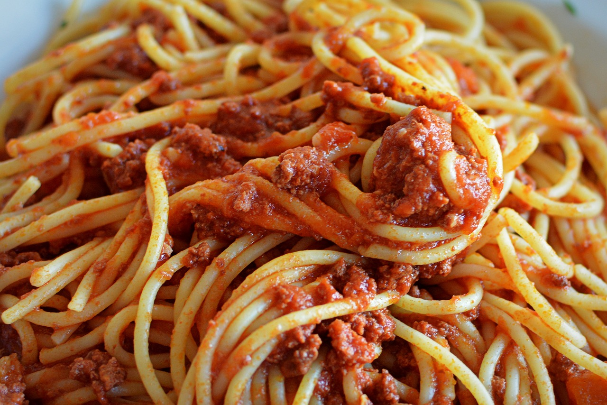

Classic Spaghetti with Meat Sauce — Simple and Delicious | By: your's truly :)
This recipe is a variation of my mother’s classic version, passed down and perfected over the years. It’s simple, hearty, and full of flavor — the kind of dish that keeps everyone coming back for seconds! Best of all, it’s ready to serve in about 30 to 40 minutes. 😉
Ingredients:
1 lbs fresh ground beef
2 tablespoons olive oil
1 cup freshly diced onion
1 tablespoon freshly minced garlic
1 teaspoon sugar
Freshly chopped oregano and/or basil, to taste
Salt and pepper, to taste
1 box of your favorite spaghetti noodles
1 4-oz can Contadina tomato paste
2 16-oz can Hunt’s tomato sauce
Steps
On low to medium heat, sauté olive oil, onions, garlic, herbs, salt, pepper, and sugar for about five minutes.
Stir in the fresh ground beef.
Cook and simmer until the beef is thoroughly browned.
Stir in the tomato paste and sauces.
Simmer the sauce, stirring frequently, for 15–20 minutes.
Reduce the heat to low and stir occasionally to keep the sauce from sticking.
Bring a large pot of water to a boil and cook the spaghetti noodles to your desired texture.
Drain the noodles, then either pour the sauce over the noodles and toss to combine, or plate the spaghetti and spoon the sauce on top to serve.
Garnish with mozzarella or Parmesan as desired and serve hot.